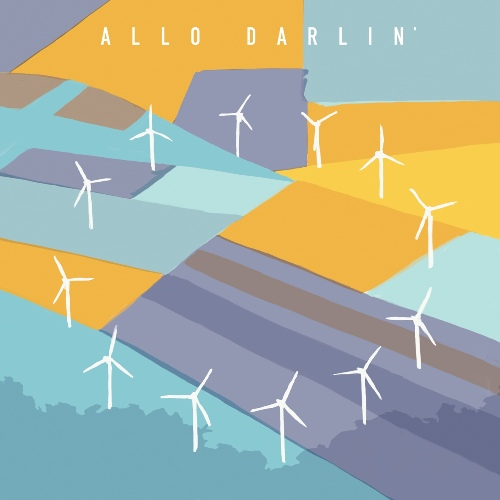
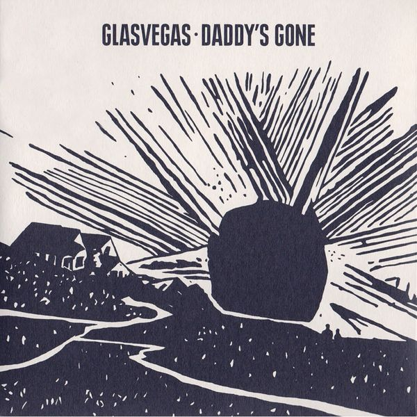
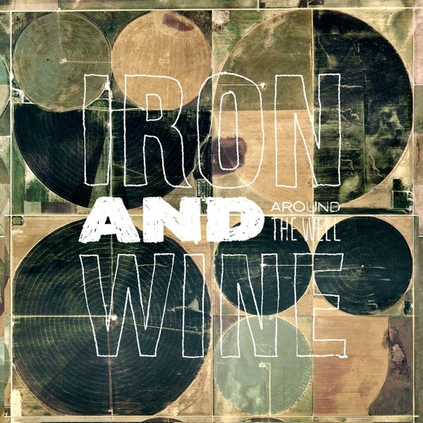
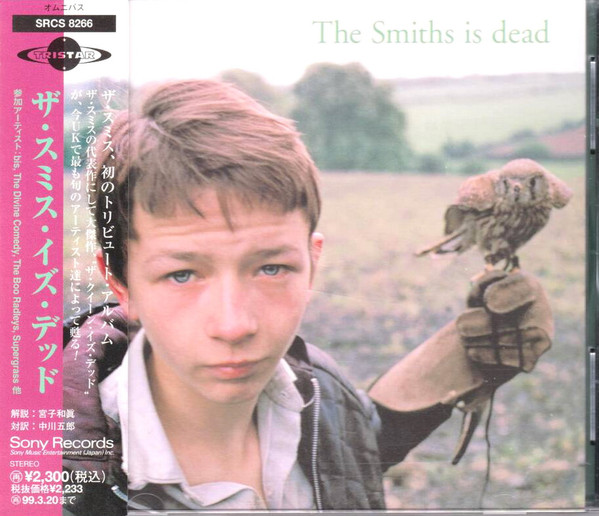
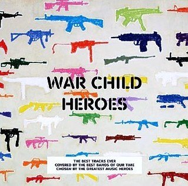
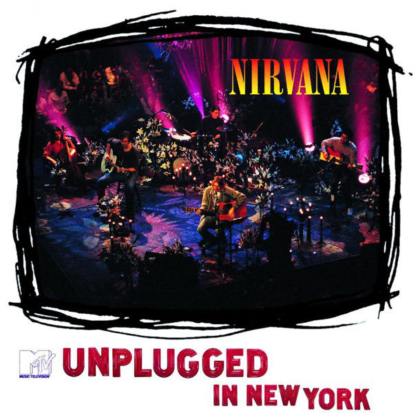
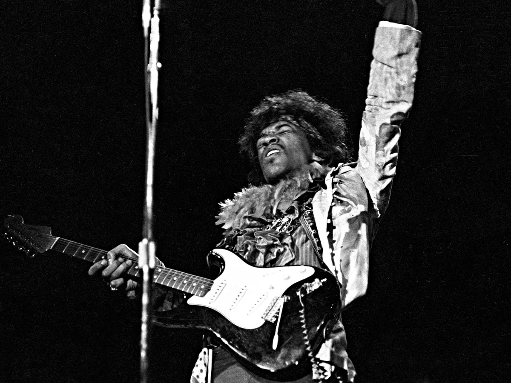

01I Wanna Be Sedated
Allo Darlin' – Covers (Bonus CD) (2012)
orig. The Ramones
 02
02
Will You Still Love Me Tomorrow?
Lykke Li – Will You Still Love Me Tomorrow? (2009)
orig. The Shirelles
 03
03
I Only Have Eyes For You
Summer Camp – Welcome To Condale Demos (2011)
orig. The Flamingos
 04
04
He Hit Me (And It Felt Like A Kiss)
Hole – Plugged & Unplugged (1995)
orig. The Crystals

05Come As You Are
Glasvegas – Daddy's Gone (Part Two) (2008)
orig. Nirvana
 06
06
Born In The U.S.A. (W/ Concern)
Casiotone For the Painfully Alone – Advance Base Battery Life (2009)
orig. Springsteen

07Love Vigilantes
Iron & Wine – Around the Well (2009)
orig. New Order

08There Is a Light That Never Goes Out
The Divine Comedy – The Smiths Is Dead (1996)
orig. The Smiths

09Do The Strand
Scissor Sisters – War Child Presents Heroes (2009)
orig. Roxy Music

10The Man Who Sold The World
Nirvana – Unplugged in New York (1994)
orig. David Bowie
 11
11
Be My Baby
Glasvegas – It's My Own Cheating Heart That Makes Me Cry (2008)
orig. The Ronettes
 12
12
Oh! You Pretty Things
Au Revoir Simone – Life Beyond Mars - Bowie Covered (2008)
orig. Bowie
 13
13
All The Young Dudes
Matthew Sweet And Susanna Hoffs – Under The Covers Vol. 2 (2009)
orig. David Bowie
 14
14
Cloudbusting
Wild Nothing – Cloudbusting (2010)
orig. Kate Bush
 15
15
20th Century Boy
Placebo – Sleeping With Ghosts (2003)
orig. T-Rex
 16
16
Cermony
RickoLus – Other Peoples Clothes
orig. New Order
 17
17
White Room
The Bobs – The Bobs Sing The Songs Of... Volume 2 (1994)
orig. Cream
18
Kids
Dr Fox's Old Timey String Band – Internet Single (2009)
orig. MGMT
 19
19
I'm So Lonesome I Could Cry
The Raveonettes – Pretty In Black (2005)
orig. Hank Williams
 20
20
Lust For Life
Bad Livers – Lust For Life (1991)
orig. Iggy Pop & The Stooges

21Like A Rolling Stone
Jimi Hendrix Experience – Monterey Pop, 6-18-67 (1967)
orig. Bob Dylan
 22
22
Young Folks
Kanye West – Alter Ego (2007)
orig. Peter Bjorn & John